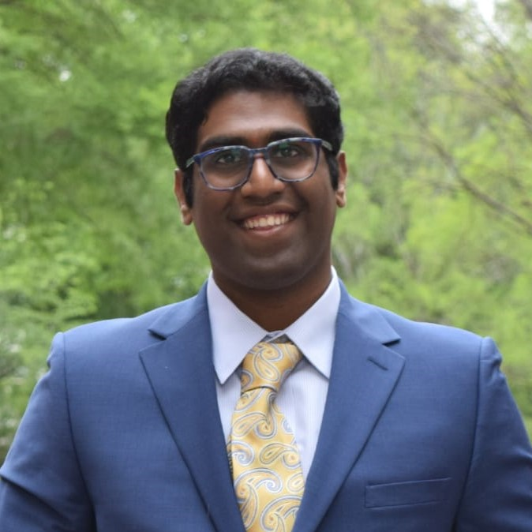

About
Vivek Mallampati
PhD candidate in Robotics and AI at Oregon State University. Graduating December 2027.
Advised by Dr. Julie Adams
Corvallis, Oregon
mallampv@oregonstate.edu

Biography
I started the PhD in Robotics and AI at Oregon State in Fall 2023, in the Human-Machine Teaming Laboratory with Julie Adams. I run the human-subject studies on a remote-pilot interface I did not build, and I build the physiological processing and the workload models those studies use. The research page has the results.
Before Oregon State I completed an MS in Robotics at Georgia Tech, in the STAR Lab with Harish Ravichandar. I inferred which traits matter for a task, and I generated StarCraft II demonstrations for a coalition-formation algorithm.
I graduated from the University of Illinois Urbana-Champaign in May 2021 with a bachelor’s in Mathematics and Computer Science, with high distinction. In Kris Hauser’s Intelligent Motion Laboratory I built Jarvis, the manager for the TRINA nursing robot: it issued commands, held robot state, and managed the modules. I also built the robot’s storage for spatial and temporal data, and the documentation for the VR teleoperation headset.
Focus
- Human supervision of robot teams
- How many aircraft, or how much of a task, one person can actually hold.
- Multi-robot task allocation
- Forming teams from demonstrations, preferences, and the robots on hand.
- Learning from demonstrations
- Reading preferences out of expert allocations, including allocations that are not optimal.